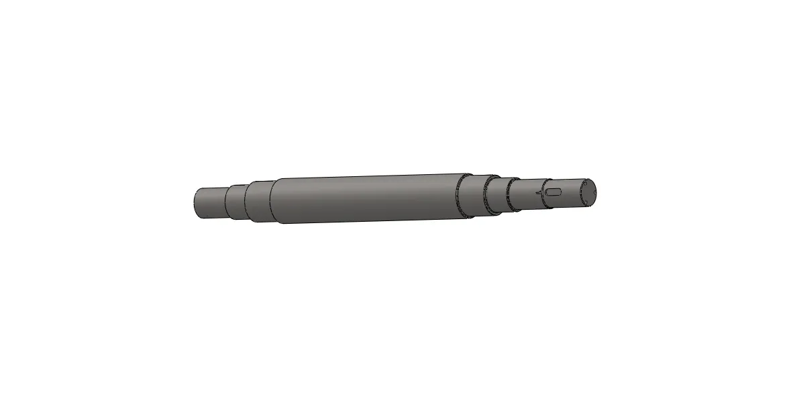
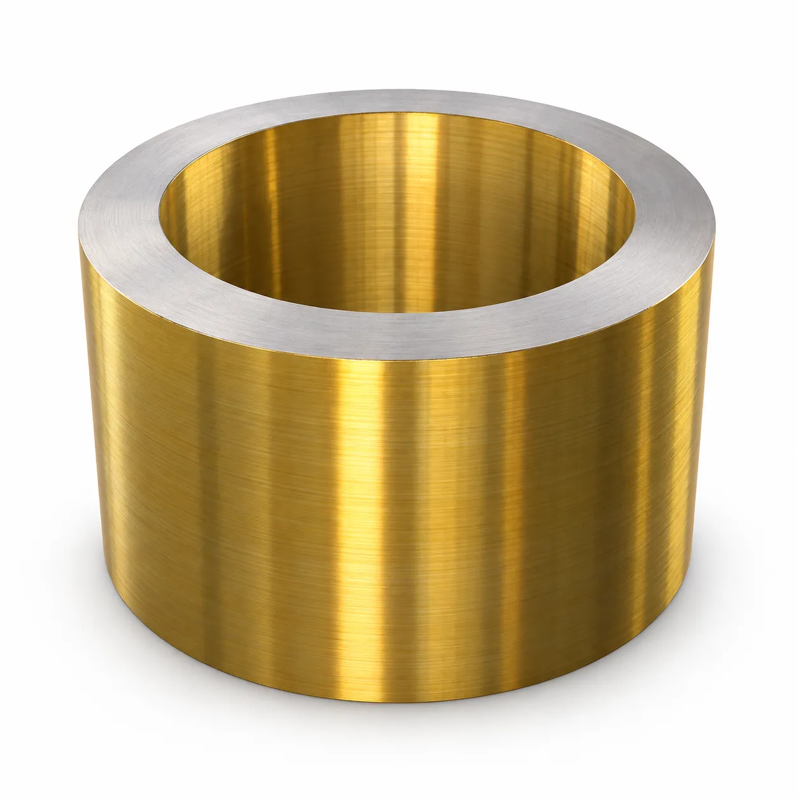
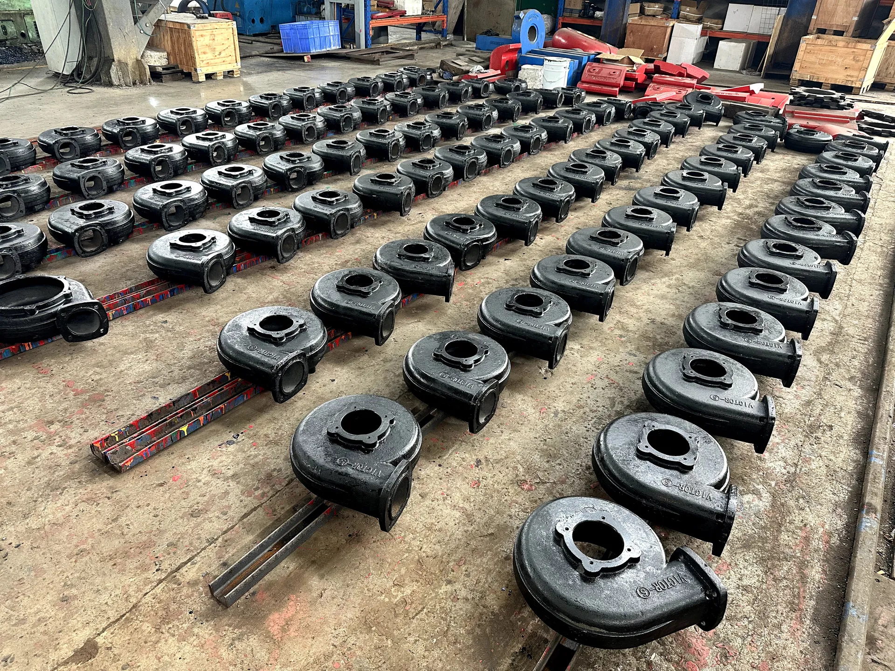

Изготавливаем прочие литые детали под заказ: по чертежу, артикулу и фотографии.


Зубчатая износостойкая футеровочная плита, воспринимающая удар и абразивный износ материала и защищающая корпус оборудования.
Запросить стоимость
Обычно применяется на внутренних стенках дробилок или мельниц для восприятия ударных и абразивных нагрузок от материала, защиты корпуса оборудования и улучшения захвата и выгрузки материала.
Запросить стоимость
Зубчатое кольцо — это кольцевая износостойкая деталь с зубьями, обычно применяемая внутри дробилок или мельниц для восприятия ударных и абразивных нагрузок от материала, защиты корпуса оборудования и улучшения захвата и выгрузки материала.
Запросить стоимость
Служат для защиты корпуса насоса, формирования канала потока и обеспечения стабильной перекачки пульпы в условиях абразивного износа.
Запросить стоимость
Назначение спирального корпуса — собирать жидкость, выбрасываемую рабочим колесом, и плавно направлять её к выходу насоса.
Запросить стоимость
Кубический пресс имеет шесть групп шарнирных балок, которые служат для восприятия огромных гидравлических нагрузок. Обычно это крупные высокопрочные поковки из стали.
Запросить стоимостьОставьте заявку — ответим в течение рабочего дня и подскажем сроки поставки.

Найдите нас в WeChat по этому номеру: